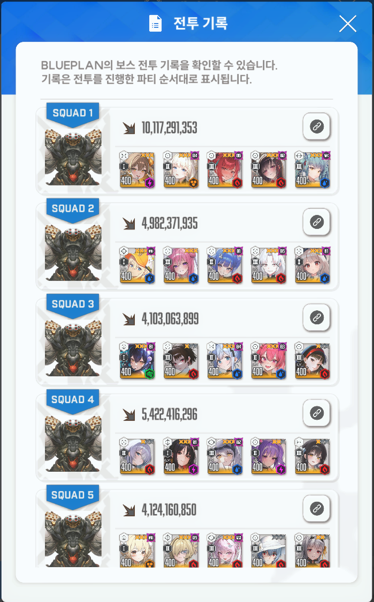
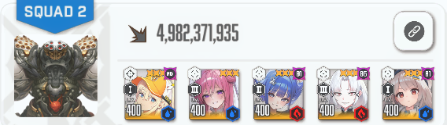
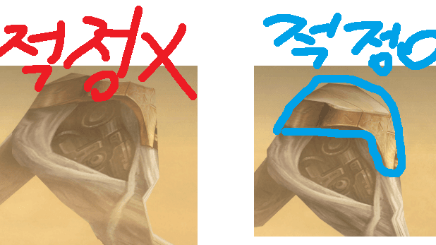
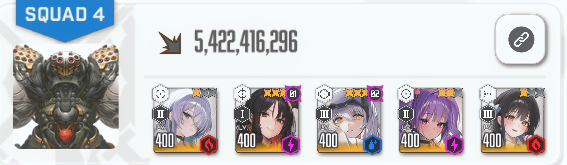
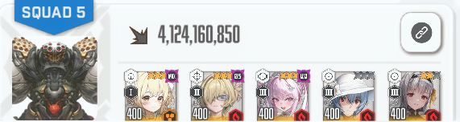
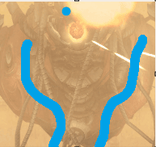

1덱 : 별거없음 15버만 조심
3덱 : 쌀먹 페게리라 약함 여기도 별거 없음 저지 개빠르게하면 2페 잡몹 아다리 좋음
2덱


여기 적정거리임
다리를 앞뒤로 흔드는데 앞으로 기울여질 때 황금파츠 부분 때리면 됨
난 딜 올라가긴했음
수로시 선버하면 알집 생길 때 마다 관통 가능
4덱

모든 저지를 최대한 미뤄야함(암전저지 제외)
m자도 하나씩 부숴가면서 미루면 속저에 안막히고 수화 다 박을 수 있음
조우알집 2관, 마지막 알집 1관 가능
암전저지 후 알집은 포커싱 잘 해서 때리면 부술 수 있음
플로라 2단이라 토템으로 썼는데 괜찮은거같음 2단인사람들도 함 써보셈
5덱

m자저지 최대한 미루다가 앨리스버 켜지면 저지하면 됨
그러면 암전저지 레이로 진입 가능

파란 선 안쪽 몸통부분 골격? 같은 부분 sr이랑 mg 적정거리 동시에 받음 여기 치면 됨
빨간 배 쪽도 적정 받긴 하는데 움직일 때 한번 씩 안받아짐, 수화같은거 치면 걍 여기 치는게 맘 편햇음